たったひとつの絵の描き方（01）を参考に 点を打ってから描画します。 ポートレイトの描き方（02,03） まずは、 参考画像のポイントとなる 点をトレースしていきます。 ポイントとしては 輪郭（耳・髪・耳・顎） 眉毛・鼻・口・目 輪郭（首・えり・肩）など いちばん大切なコトは 点を打つとき 始めの点から次の点への 角度と長さを測ることです 毎日絵を描いて角度と長さを測る訓練をすると 巧く絵を描けるようになります。 点をつないでいって あたりが取れたら 陰や色をトレースしていきます。 陰や色もポイントとなる 点を取ってつなぐだけです。 あまり絵が得意でないひとは、 リアルに描かなくても 輪郭（頭と首と肩）に 目と鼻と口と耳と髪と襟を 描くだけでも大丈夫です！
